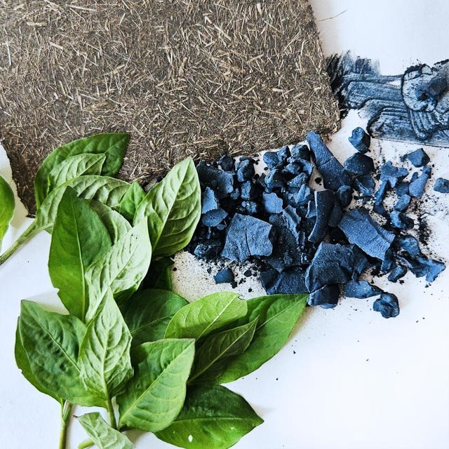
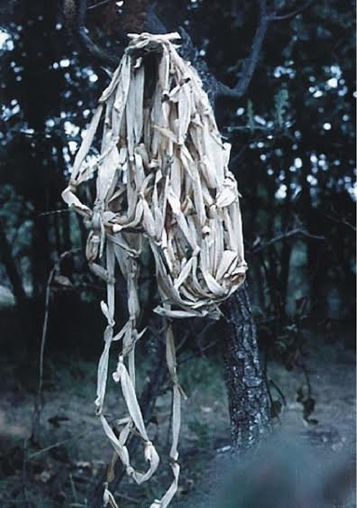

Werk
Een selectie uit de projecten. Duurzaamheid staat centraal: natuurlijke, gerecyclede en hergebruikte materialen.





Meer series, onder andere The Butterfly Effect, El Aumento, The Cube Universe en Directions of Life, staan op artbakard.com.